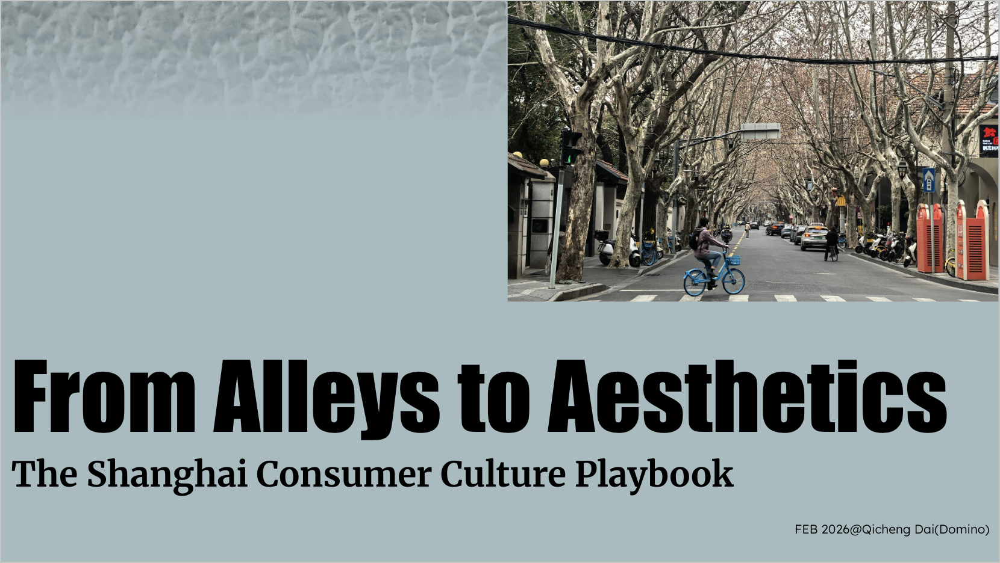
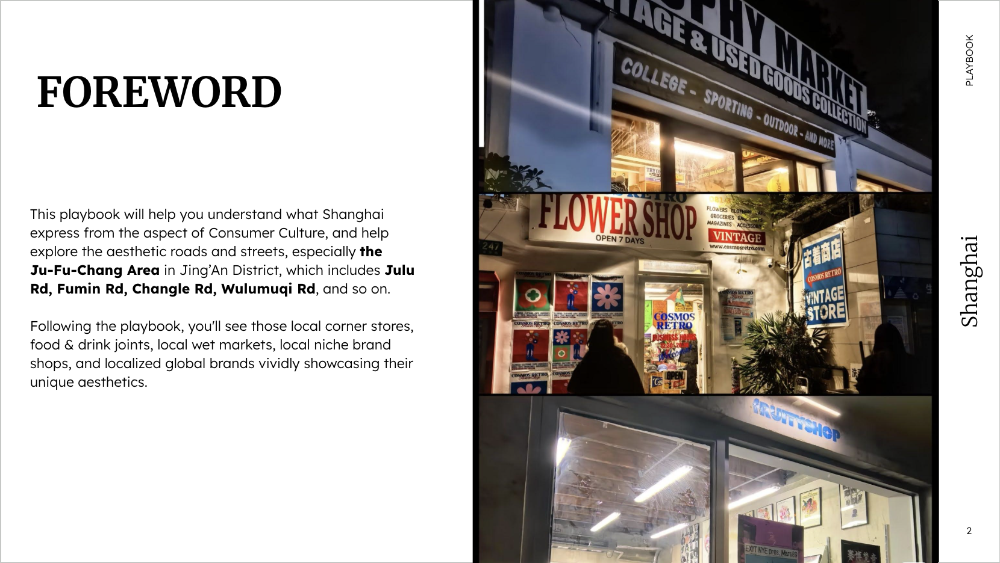
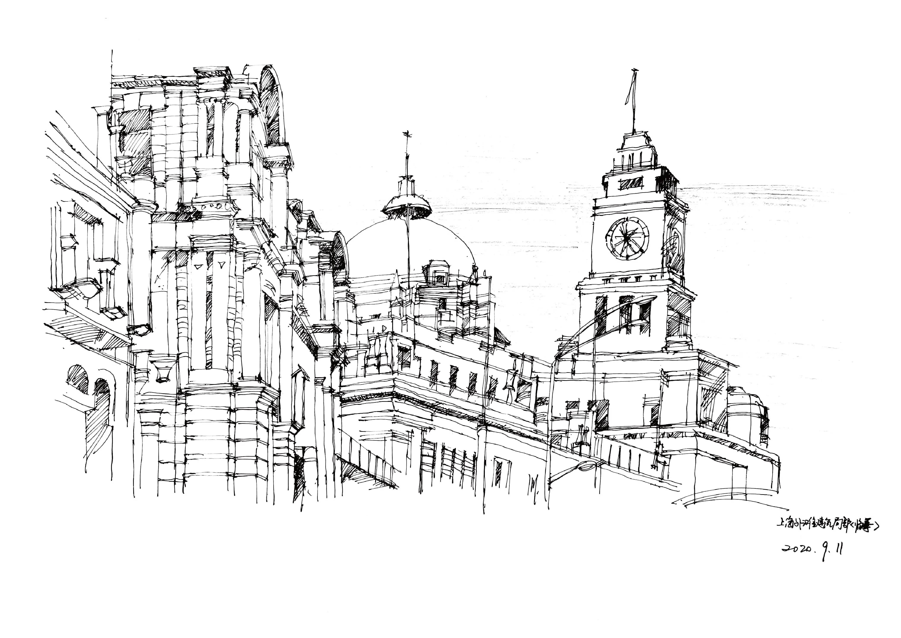
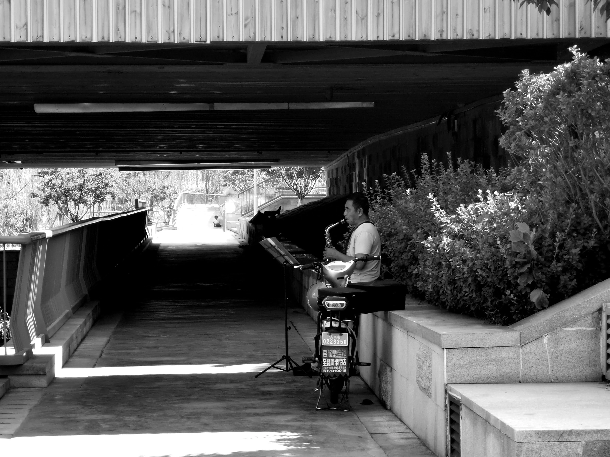

From Alleys to Aesthetics
Loading description...
Explore →Practicing perception as a traveler, every brick tells a story...
The mountains don't speak, but they answer everything with wind and light.
Finding precise expression without the need for words.



This is a solo podcast centred around travel narratives yet not fixated on destinations. My guiding principle is this—"To nurture imagination for the unfamiliar; our wealth lies in observation." Host Domino is an urban wanderer who also delights in navigating cyberspace. A key life goal is to expand the online map of Earth, uncovering more facets of the world and listening to its myriad voices. The podcast is available across major platforms including XiaoYuZhou, Apple Podcasts, Spotify, NetEase Cloud Music, QQ Music, Lizhi, WeChat Video Account, and Weibo Audio.
Explore →
Hand-drawn sketches are one of my most primal forms of self-expression. Whenever I feel stuck or confused, I always find myself picking up a brush or a pen to doodle on a piece of paper. Even in today's world, where AI is so advanced, I still believe that drawing by hand is the most direct way to connect with the brain and showcase one's thinking.
Explore →
Capture the moment with a lens; record life through imagery. I long to record the subtleties of the real world through my lens. They weave together the fragments of memory that mark the footprints I have left behind in this world.
Explore →